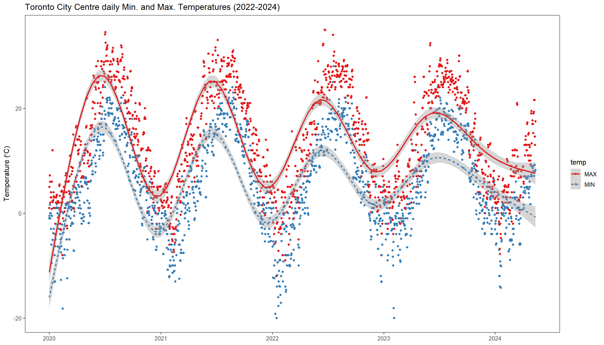
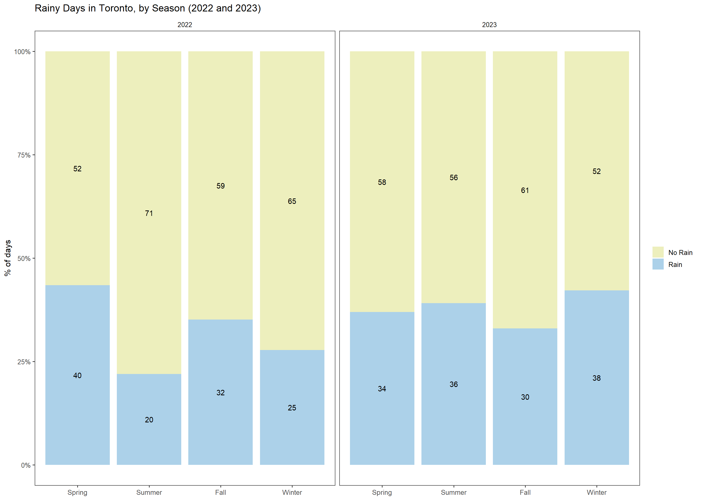

Obtain daily weather data for weather stations all over the world with a few lines of code + some plots to get you started
R
weather
packages
geo
data
Author
Rafael Belokurows
Published
May 15, 2024
Hello, Data people!
In this post, I’ll show you a great source of daily weather data for your ML projects or personal needs.
I’m talking about R package GSODR which facilitates obtaining data from the NOAA’s Global Summary of the Day (GSOD). The GSOD is a summary of daily weather conditions based on underlying hourly data points measured at more than 9,000 global weather stations.1 Check out NOAA’s webpage fore more details on it.
Some of the weather features available include, for each day:
Average, Maximum and Minimum temperature in ºC degrees.
Amount of precipitation in mm.
Relative Humidity in %
Occurrence of many weather ‘features’ such as fog, snow, hail, thunder and even tornadoes
For an exhaustive list of all the features available, check here.
Obtaining the data
GSODR is available on CRAN, so installing it is as easy as install.packages("GSODR").
Let’s find if a particular place has some weather stations near by. First, when you install the package, it stores a list of stations in a local database, from there, you can look up a country or a place (station name).
Obs: I’m sampling randomly only 100 weather stations so the map is lighter, but there are around 2K stations in Canada alone. 🤯
Another important function of this package is nearest_stations, which allows to find the nearest stations based on the geographical coordinates you provide. For instance, when looking up Toronto’s Downtown coordinates, we see a few stations nearby:
When you’re finished choosing one or multiple stations, the next step is obtaining the actual data for them:
Code
(weather_data=get_GSOD(years =c(2020:2024), station ="712650-99999")%>%select(STNID,NAME,MONTH,DAY,YEAR,TEMP,MAX,MIN,RH, I_FOG ,SLP,WDSP,PRCP,DATE =YEARMODA))%>%tail(5)%>%gt()
STNID
NAME
MONTH
DAY
YEAR
TEMP
MAX
MIN
RH
I_FOG
SLP
WDSP
PRCP
DATE
712650-99999
TORONTO CITY CENTRE
5
8
2024
14.7
21.6
7.1
65.5
1
1001.8
7.5
5.08
2024-05-08
712650-99999
TORONTO CITY CENTRE
5
9
2024
12.3
21.6
9.2
71.5
0
1009.9
3.1
0.00
2024-05-09
712650-99999
TORONTO CITY CENTRE
5
10
2024
13.2
14.6
9.2
59.2
0
1009.4
3.6
0.00
2024-05-10
712650-99999
TORONTO CITY CENTRE
5
11
2024
10.9
13.0
8.0
80.1
1
1007.4
3.0
0.00
2024-05-11
712650-99999
TORONTO CITY CENTRE
5
12
2024
11.9
17.5
8.2
81.3
1
1008.5
4.4
1.78
2024-05-12
TIP: You can also get data for multiple years and/or multiple stations at once.
Plots
Having gotten the data, there are tons of interesting things to plot. I’ll show you some examples, feel free to get inspire and create even better looking plots :)
Example 1: Temperature as lines
Here, I’m plotting Maximum (red) and Minimum temperatures each day for over 2 years of Toronto weather data, which we’ve obtained in the previous step.
There is also quite some customization going on, such as:
Smooth line for the two series (minimum and maximum)
Changing size of fonts
Disabling legend
Changing color palette to use colors widely identifiable as “cold” and “heat”
TIP: As many other ggplot2 situations, it’s a good practice to transform your data to “long format” using pivot_longer to transform it to name/value pairs.2
Code
ggplot(temperatures, aes(x=DATE, y=value, color=temp, linetype=temp))+geom_point()+scale_colour_brewer(palette="Set1")+geom_smooth(span =0.1)+ggtitle("Toronto City Centre daily Min. and Max. Temperatures (2022-2024)")+theme(plot.title=element_text(size=18, face="bold"), axis.title.y=element_text(size=15),legend.position ="None", legend.text=element_text(size=13), axis.title.x=element_text(size=16))+labs(x =NULL, y=expression(paste("Temperature (",degree,"C)")))+theme_few()#scale_y_continuous(limits=c(-30, 50)) + scale_x_continuous(limits=c(0, 200))

Example 2: Rainy Days By Season
With this plot, I wanted to see the difference in the number of rainy days from one season to another. It should be interesting also to compare this aspect for different regions that have dry/wet seasons in different parts of the year. The first roadblock here was: how to define what is a season based on the dates, since weather seasons change in different days of the month and you also have to break months in parts. For that purpose, I’ve borrowed a function I had seen on Stack Overflow and made some concessions to get to a quicker solution setting season change dates always on the 21th, for the sake of simplicity. 😆
Show the code
weather_data$rained=ifelse(weather_data$PRCP==0|is.na(weather_data$PRCP),"No Rain","Rain")#Based on the code obtained from:#https://stackoverflow.com/questions/9500114/find-which-season-a-particular-date-belongs-totoSeason<-function(dat){stopifnot(class(dat)=="Date")scalarCheck<-function(dat){m<-as.POSIXlt(dat)$mon+1# correct for 0:11 ranged<-as.POSIXlt(dat)$mday# correct for 0:11 rangeif((m==3&d>=21)|(m==4)|(m==5)|(m==6&d<21)){r<-1}elseif((m==6&d>=21)|(m==7)|(m==8)|(m==9&d<21)){r<-2}elseif((m==9&d>=21)|(m==10)|(m==11)|(m==12&d<21)){r<-3}else{r<-4}r}res<-sapply(dat, scalarCheck)res<-ordered(res, labels=c("Spring", "Summer", "Fall", "Winter"))invisible(res)}weather_data$season=toSeason(weather_data$DATE)
Having done that, we can then plot a 100% stacked bar chart of each Season and on how many days it rained for each one. As you can see for this particular case, Season were more homogeneous in terms of rain in Toronto in 2023.
Code
weather_data%>%filter(YEAR%in%c(2022,2023))%>%ggplot(aes(x =season,fill=rained))+geom_bar( position="fill")+stat_count(geom ="text", aes(label =..count..), position=position_fill(vjust=0.5), colour="black")+scale_fill_manual(values =c("#EDEFBD","#ACD1E9"))+ggtitle("Rainy Days in Toronto, by Season (2022 and 2023)")+labs(fill =NULL, x=NULL, y="% of days")+scale_y_continuous(labels =scales::percent_format())+facet_grid(~YEAR)+theme_few()

Example 3: Horizon Plots to visualize temperature changes over the years
Okay, I can’t remember where I’ve seen this one, but I thought it was an ingenious way of plotting something like daily temperatures and I wanted to replicate it with my own data. Since it scales from the lowest to the highest temperature present in the data, it allows to see variations in temperature across many years. As you will probably agree, it seems that 2023 in Toronto had milder temperatures both in the Winter and in the Summer with much less prominent spikes over the entire year.
Credits to ggHoriPlot’s vignette which had some great examples that I borrowed from.
weather_data%>%filter(YEAR<2024)%>%mutate(date_mine =as.Date(str_glue("2024-{MONTH}-{DAY}")))%>%#constant date, just to assemble one year on top of the otherggplot()+geom_horizon(aes(date_mine, TEMP, fill =..Cutpoints..), origin =ori, horizonscale =sca)+scale_fill_hcl(palette ='RdBu', reverse =T)+facet_grid(YEAR~.)+theme_few()+scale_x_date(expand=c(0,0), date_breaks ="1 month", date_labels ="%b")+xlab(NULL)+theme( panel.spacing.y=unit(0, "lines"), strip.text.y =element_text(size =16, angle =0, hjust =0), axis.text.y =element_blank(), axis.title.y =element_blank(), axis.ticks.y =element_blank(), panel.border =element_blank(), legend.position ="None", plot.title=element_text(size=20, face="bold"), axis.text.x =element_text(size=16,hjust=-1))+labs(title ='Daily Temperature in Toronto, Canada',x=NULL,subtitle="The stronger the color, the more extreme the temperature")